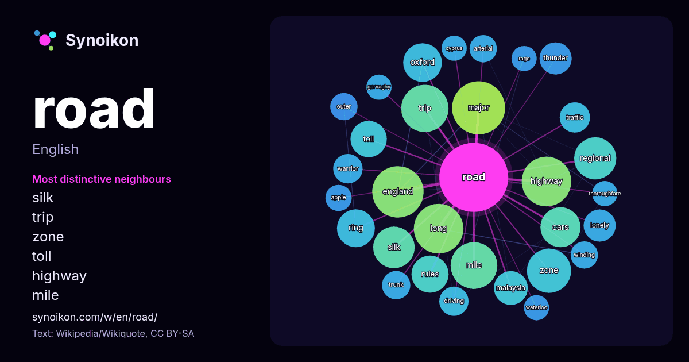

English · word of the day list
road
The words found around it in 2101 instances from Wikipedia, Wikiquote, Hacker News.

Most distinctive neighbours
- silk 28×
- trip 28×
- zone 22×
- toll 21×
- highway 20×
- mile 19×
- oxford 18×
- lonely 18×
- ring 18×
- thunder 17×
- malaysia 16×
- england 15×
- regional 15×
- trunk 14×
- arterial 14×
- winding 13×
- warrior 12×
- major 12×
- driving 12×
- garvaghy 12×
× = how many times more often than in general Wikipedia text.
Most frequent neighbours
- major 49
- film 48
- england 46
- highway 43
- long 43
- album 40
- trip 39
- mile 38
- state 34
- street 34
- zone 34
- system 33
- london 32
- public 32
- world 32
- regional 31
- silk 30
- cars 28
- national 28
- country 26
In context
- A road is a thoroughfare from one place to another, primarily used for movement of traffic. Many roads are paved. The words "road" and "street" are commonly Wikipedia snippets · Road
- conveyance. Road or Roads may also refer to: Road movie Road (2002 film), a Hindi movie Road (2014 film), motorcycle racing documentary Road, Movie, a 2009 Wikipedia snippets · Road (disambiguation)
- The Road is a 2006 post-apocalyptic novel by American writer Cormac McCarthy. The book details the grueling journey of a father and his young son over Wikipedia snippets · The Road
- Abbey Road is the eleventh studio album by the English rock band the Beatles, released on 26 September 1969 by Apple Records. It is the last album the Wikipedia snippets · Abbey Road
- On the Road is a 1957 novel by American author Jack Kerouac, inspired by his travels across the United States. It is widely regarded as a defining work Wikipedia snippets · On the Road
- scripted. Road to Singapore (1940) Road to Zanzibar (1941) Road to Morocco (1942) Road to Utopia (made in 1943, but not released until 1946) Road to Rio Wikipedia snippets · Road to ...
- Obins Street→Corcrain Road→Dungannon Road→Drumcree Road→Garvaghy Road, but it is now banned from Obins Street and Garvaghy Road. The 12 July parade. This Wikipedia snippets · Drumcree conflict
- "The Long and Winding Road" is a song by the English rock band the Beatles from their 1970 album Let It Be. A piano ballad, it was composed by Paul McCartney Wikipedia snippets · The Long and Winding Road
More words
- art
- autumn
- bell
- bread
- bridge
- cat
- city
- climate
- clock
- death
- desert
- dog
- family
- food
- forest
- garden
- god
- gold
- health
- heart
- history
- honey
- horse
- island
- language
- life
- map
- mirror
- money
- mother
- mountain
- nature
- power
- rain
- salt
- science
- shadow
- silence
- song
- star
- storm
- summer
- tea
- time
- train
- truth
- water
- winter
- work
Precomputed on 2026-10-09 with default settings (±5 words, medium corpus). The interactive map can refresh it with live data.